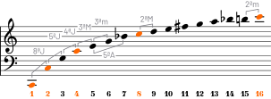
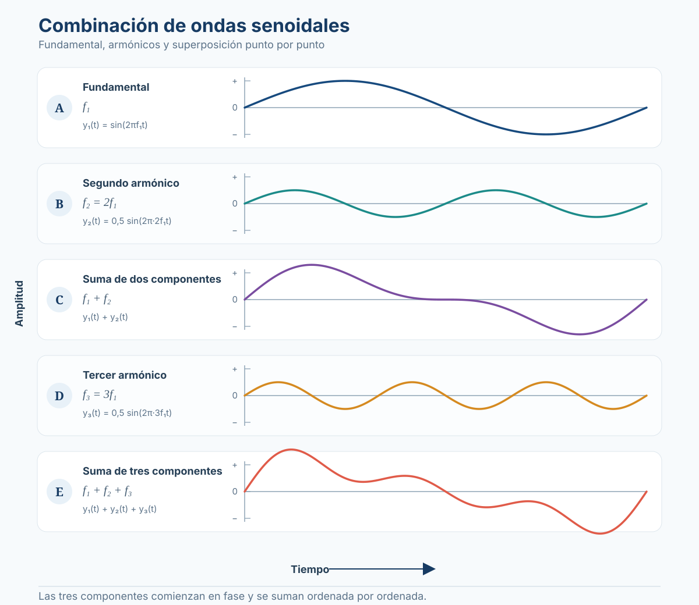
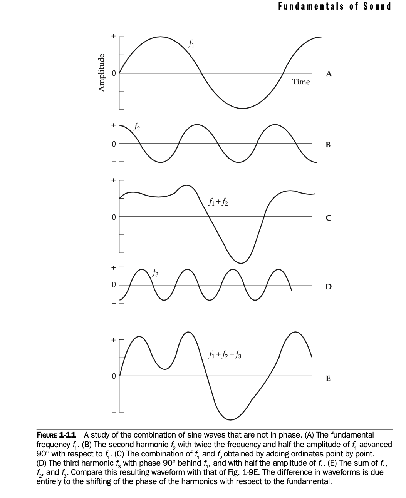

Sesión 4: Del tono puro al timbre¶
Armónicos, espectro, periodicidad y ruido
Unidades y símbolos (glosario de referencia)
| Símbolo | Nombre | ¿Qué mide? | Equivalencia |
|---|---|---|---|
| Hz | Hertz | Frecuencia | 1 Hz = 1 ciclo/s |
| kHz | Kilohertz | Frecuencia | 1 kHz = 1000 Hz |
| s | Segundo | Tiempo | — |
| ms | Milisegundo | Tiempo | 1 ms = 0.001 s |
| \(f\) | Frecuencia | Ciclos por segundo | \(f=1/T\) |
| \(f_0\) | Frecuencia fundamental | Primera componente de una serie | Suele definir la altura percibida |
| \(T\) | Período | Duración de un ciclo | \(T=1/f\) |
Objetivos de la sesión
Al finalizar, deberías poder responder:
- ¿Qué diferencia un tono puro de un sonido complejo?
- ¿Qué es un armónico y cómo se relaciona con la fundamental?
- ¿Por qué dos instrumentos tocando la misma nota pueden sonar diferentes?
- ¿Qué diferencia una señal periódica de una señal aperiódica?
1. Primero escuchamos: ¿una frecuencia o muchas?¶
Un tono puro contiene una sola frecuencia. La mayoría de los sonidos musicales son complejos: contienen muchas frecuencias simultáneas.
🎧 Experimento 1 — Construye un sonido
Fundamental: Do3 ≈ 130.8 Hz. Escucha cómo cambia el sonido al añadir armónicos.
Escucha antes de leer
- ¿Sigues percibiendo aproximadamente una sola altura?
- ¿Qué cambia más: la altura o el timbre?
- ¿Qué ocurre cuando agregamos más componentes?
Joseph Fourier mostró que una onda periódica compleja puede representarse como suma de ondas sinusoidales.
Idea clave: un sonido complejo puede analizarse como una combinación de componentes simples.
2. Fundamental, armónicos y parciales¶
La frecuencia fundamental se representa como \(f_0\).
Los armónicos son múltiplos enteros de esa frecuencia:
Si:
entonces:
| Término | Significado | Ejemplo |
|---|---|---|
| Fundamental | Primer componente | 100 Hz |
| 2.º armónico | \(2f_0\) | 200 Hz |
| 3.º armónico | \(3f_0\) | 300 Hz |
| Parcial | Cualquier componente presente | 100, 215, 300 Hz… |
Armónico y parcial no son lo mismo
Todo armónico es un parcial, pero no todo parcial es armónico. Un parcial inarmónico no es un múltiplo entero exacto de una sola fundamental.
3. La serie armónica como mapa de intervalos¶
Tomemos como fundamental:
En lugar de memorizar dieciséis números, vamos a buscar familias.
🎨 Explora la serie armónica
3.1 Octavas¶
Los armónicos:
corresponden a:
Cada salto duplica la frecuencia:
Por eso la relación de octava es:
3.2 Quintas¶
La familia:
produce:
La quinta aparece al comparar los armónicos 3 y 2:
3.3 Tercera mayor¶
La familia:
produce la clase de altura Mi.
La relación entre los armónicos 5 y 4 es:
Afinación natural y temperamento igual
Algunos armónicos no coinciden exactamente con las notas del piano afinado en temperamento igual. Por eso aparecen símbolos como ↓ o la indicación aprox.
3.4 Una idea visual útil¶
Podemos pensar la serie como varias familias superpuestas:
Consonancia
Relaciones sencillas como \(2:1\), \(3:2\) y \(5:4\) producen coincidencias importantes entre componentes espectrales. Esto contribuye a la percepción de consonancia, aunque también influyen el timbre, el registro, la afinación y el contexto musical.

4. El timbre: misma fundamental, diferente espectro¶
Dos sonidos pueden tener la misma fundamental y sonar completamente distintos.
🎧 Experimento 2 — Misma altura, diferente timbre
Todos tienen una fundamental cercana a 130.8 Hz. Escucha y observa qué armónicos aparecen en cada forma de onda.
Qué deberías ver
- Seno: prácticamente un solo pico en (f_0).
- Triangular: armónicos impares (f_0, 3f_0, 5f_0,ldots), pero los superiores caen muy rápido.
- Cuadrada: armónicos impares (f_0, 3f_0, 5f_0,ldots) con mayor presencia relativa.
- Diente de sierra: aparecen armónicos pares e impares (f_0, 2f_0, 3f_0,ldots).
La fundamental no cambia; cambia la distribución de energía entre sus armónicos. Eso es una parte central del timbre.
| Forma de onda | Contenido armónico idealizado |
|---|---|
| Seno | Solo \(f_0\) |
| Triangular | Armónicos impares con caída rápida |
| Cuadrada | Armónicos impares |
| Diente de sierra | Armónicos pares e impares |
Para la onda cuadrada:
Para la onda diente de sierra:
Idea clave: el timbre depende mucho de qué componentes frecuenciales están presentes y de sus amplitudes relativas.
5. Dominio temporal y dominio frecuencial¶
| Dominio | Eje X | Eje Y | Muestra |
|---|---|---|---|
| Temporal | Tiempo | Amplitud | Forma de onda |
| Frecuencial | Frecuencia | Amplitud o nivel | Espectro |
Una sinusoide ideal produce una sola línea espectral. Un sonido armónico produce líneas en:
Un ruido de banda ancha presenta energía distribuida de forma más continua.
6. Fase y forma de onda¶
La fase indica cómo se alinean las componentes en el tiempo:
| Símbolo | Significado |
|---|---|
| \(f_0\) | Fundamental |
| \(nf_0\) | Armónico \(n\) |
| \(A_n\) | Amplitud |
| \(\phi_n\) | Fase |


7. Señales periódicas y aperiódicas¶
Una señal periódica cumple:
donde \(T\) es el período.
| Tipo | Comportamiento | Espectro típico | Ejemplo |
|---|---|---|---|
| Periódica | Repite un ciclo | Líneas discretas | Oscilador |
| Cuasiperiódica | Repite con pequeñas variaciones | Líneas variables | Voz sostenida |
| Aperiódica | Sin ciclo estable | Más continuo | Ruido, transitorios |
8. Ruido blanco, rosa y marrón¶
🎧 Experimento 3 — Colores de ruido
Escucha a volumen moderado y observa cómo cambia la distribución espectral entre graves y agudos.
Qué deberías observar
- Ruido blanco: el espectro se mantiene relativamente alto a lo largo del rango mostrado.
- Ruido rosa: la curva desciende progresivamente hacia las frecuencias altas.
- Ruido marrón: la caída es más pronunciada y la energía se concentra mucho más en graves.
Aquí no aparecen líneas armónicas discretas como en una onda periódica: la energía se distribuye de manera continua en un rango amplio de frecuencias.
| Color | Densidad espectral de potencia | Energía por octava |
|---|---|---|
| Blanco | Constante por Hz | Aumenta ≈ \(+3\) dB/octava |
| Rosa | Proporcional a \(1/f\) | Aproximadamente constante |
| Marrón | Proporcional a \(1/f^2\) | Disminuye ≈ \(-3\) dB/octava |
Atención con las pendientes
En una gráfica de densidad espectral de potencia, el ruido marrón \(1/f^2\) cae aproximadamente \(-6\) dB por octava. Al integrar la energía dentro de cada octava, la caída es aproximadamente \(-3\) dB por octava.
9. Cierre¶
La secuencia conceptual de la sesión es:
Comprueba si lo entendiste
- Si \(f_0=100\) Hz, ¿cuáles son los primeros cinco armónicos?
- ¿Por qué \(1,2,4,8,16\) forman una familia de octavas?
- ¿Qué relación define una quinta justa en la serie armónica?
- ¿Qué diferencia espectral hay entre una sinusoide y una diente de sierra?
- ¿Por qué el ruido rosa suele sonar menos brillante que el blanco?
Basado en: Everest, F. A. & Pohlmann, K. C. (2009). Master Handbook of Acoustics (5th ed.). McGraw-Hill.